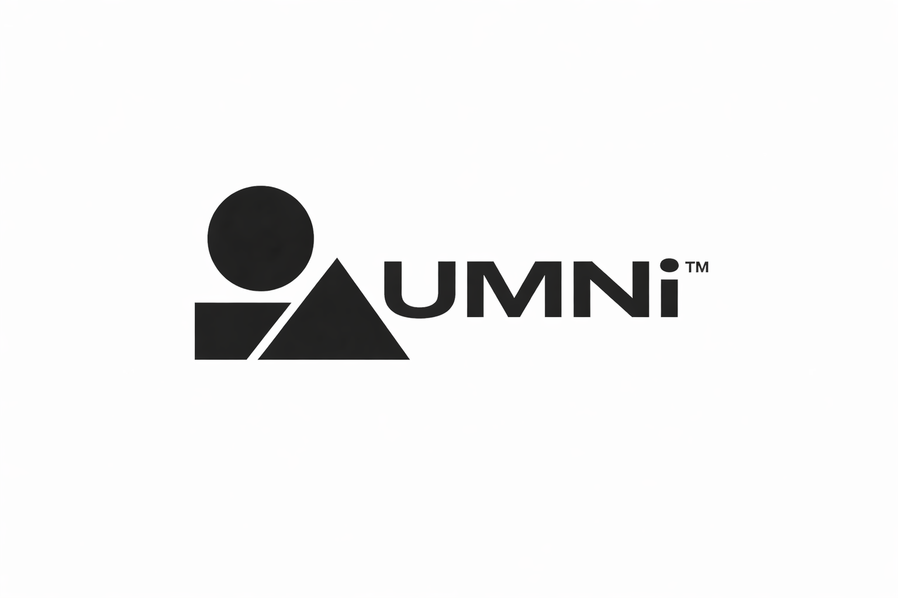

About us
UMNi builds structured trading software designed to improve visibility, awareness, and control inside live MT5 environments. At the core of the system is UMNi — Universal Market Navigation Intelligence — a framework focused on helping traders and operators navigate market conditions with clearer information and cleaner decision support.
Rather than creating disconnected tools, the product line is designed as one connected system. UMNi-NTFY™ handles notification delivery, UMNi-ALRT™ extends live market awareness, and UMNi-CMND™ adds the remote command layer for controlled operator interaction. Each product represents a different level of the same navigation architecture.

Mission
To make automated trading environments easier to monitor, easier to interpret, and easier to navigate through structured intelligence, cleaner event flow, and progressive system access.
Approach
Build software in connected layers, starting with notification and awareness, then extending into deeper alerting and governed command capability, while keeping setup, licensing, and system growth clear.
Focus
Retail, advanced, and commercial trading workflows that need Telegram-linked awareness, structured automation messaging, and a scalable framework for monitoring and controlled interaction.